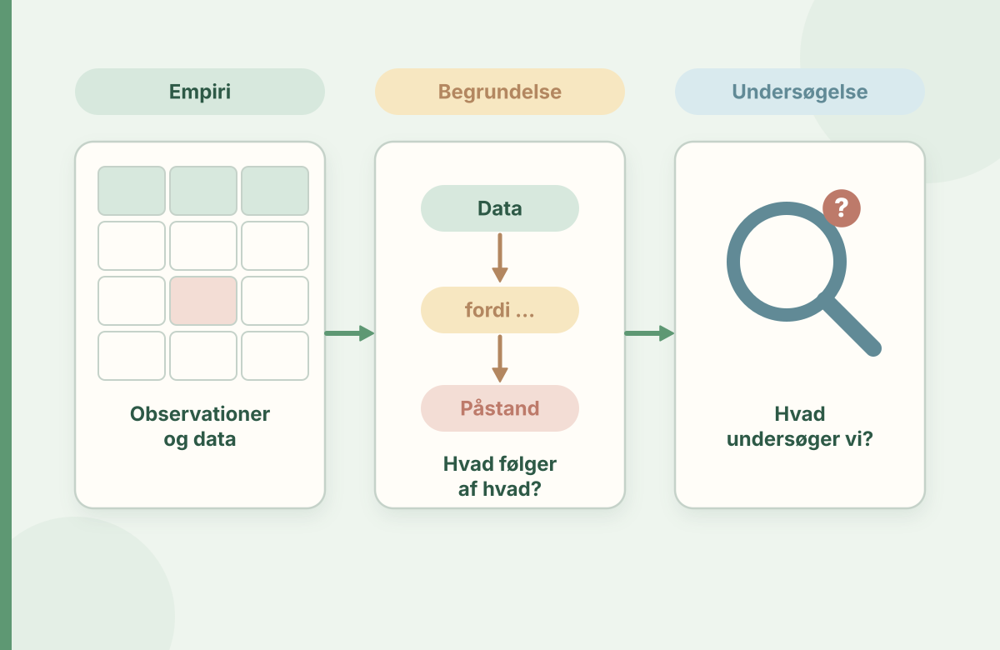

Fra påstand til faglig begrundelse
Øv dig i at skelne mellem det, der er set, det, der tolkes, og det, du kan begrunde at gøre. Brug derefter dit eget materiale til at skrive et analyseafsnit, der holder.
Til lærerstuderende og læsevejlederstuderende, der skal bruge observationer og teori til at begrunde et valg.

En god analyse skelner mellem tre niveauer: Hvad kan du dokumentere? Hvilke fortolkninger er mulige? Hvad kan du på det grundlag anbefale at undersøge eller afprøve? Det er den skelnen, du arbejder med her.
Hvilken type udsagn læser du?
Vælg den kategori, som passer bedst. Øvelsen træner din evne til at skelne mellem datamateriale, forklaring og didaktisk beslutning.
Hvilken undersøgelse vil du prioritere først?
Fiktiv situation: En elev i 5. klasse diskuterer gerne historiefaglige spørgsmål efter oplæsning, men bruger lang tid på flere ukendte ord i en fagtekst. Teamet overvejer, om hovedproblemet er ordafkodning eller tekstens sproglige krav. Hvilken undersøgelse vil du begynde med, og hvad vil den kunne belyse?
Byg et analyseafsnit med dit eget materiale
Skriv kort og præcist i felterne. Værkstedet sætter dine stikord ind i et samlet arbejdsudkast, som du kan kopiere og redigere. Brug udkastet til din egen videre analyse og faglige bearbejdning.
Brug opdigtede eller fuldt anonymiserede eksempler, og skriv dine faglige iagttagelser i generelle vendinger.
Dit arbejdsudkast
Tjek, om hver påstand har belæg, før du bruger udkastet i en opgave.
Læs dine egne argumenter som en kritisk vejleder
- Kan læseren se forskellen på observation og min forklaring?
- Har jeg valgt teori og forskning, der faktisk svarer på spørgsmålet?
- Er mine henvisninger præcise, og har jeg gengivet forskningen rimeligt?
- Har jeg taget højde for modforklaringer og datamaterialets begrænsninger?
- Kan min didaktiske anbefaling afprøves og følges op?
Spørg en medstuderende: “Hvilken af mine sætninger ville du gerne have mere belæg for?” Det er ofte den mest lærerige form for respons.
Faglig forankring og videre læsning
Værkstedets opgavetyper er udviklet som en didaktisk øvelse i analyse og faglig argumentation. Elevudsagnene er fiktive og giver mulighed for at øve observation, analyse og argumentation.
- VIA University College: Læsevejledning i grundskolen: uddannelsesretningens faglige rammer.
- Undervisningsministeriet: Test- og evalueringsredskaber: forskellen på opsporing, risikotest og Ordblindetesten.
- EMU: Læse- og skriveteknologi i undervisningen: didaktiske overvejelser ved brug af LST.
Tjek også dine konkrete modulkrav og skolens gældende procedurer.